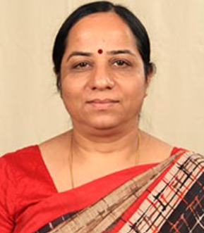
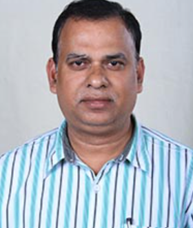
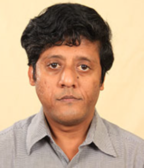
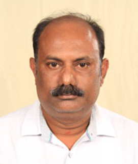
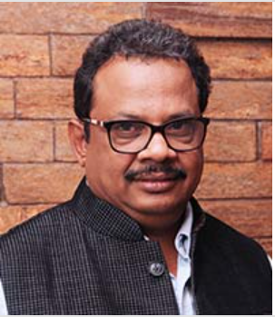

KIIT was established in 1992 as a vocational training centre with only two staff and 12
students. However,
it took shape as an institution only in 1997, when degree engineering programme commenced.
KIIT owes its existence to the vision of its founder Prof.
Achyuta Samanta who, with no land, limited finances (only Rs. 5000/-) and little knowledge of
higher education
to create an institution for the benefit of the society. From these small beginnings,
KIIT has developed into a leading university with a strong interdisciplinary culture
and a commitment to teaching excellence.
|
|
Informations
Admission to undergraduate and postgraduate programs are primarily done through the institute's entrance
examination KIITEE (KIIT Entrance Examination).
Admission to the MTech program are also granted through GATE.
Students are admitted to the law school through a written all India common test known as KLSAT (KIIT Law
School Admission Test).
For the newly introduced courses of fashion, film studies, journalism and sculpturing the admission will
be done on the basis of merit of
previous qualifying examinations and additional experiences related to the concerned disciplines.
Scholarship
The Institute also grants scholarships to meritorious and needy students every year.
Among them, Pradyumna Bal Memorial Scholarship is awarded to two economically challenged but
meritorious students and they are provided completely free education along with ancillary expenses.
|
| Computer Applications |
Director Prof. Veena Goswami |
BCA, B.Sc, MCA |
 |
| Computer Engineerings |
Director Prof. Biswajit Sahoo |
B.Tech, M.Tech, Ph.D |
 |
| Civil Engineering |
Dean Prof. Sanjib Maulick |
B.Tech, M.Tech, Ph.D |
 |
| Mechanical Engineering |
Director Prof. Alok K. Sahoo |
B.Tech, M.Tech, Ph.D |
 |
| Architecture & Planning |
Director Prof. Soumyendu S. Ray |
B.Arch |
 |
|